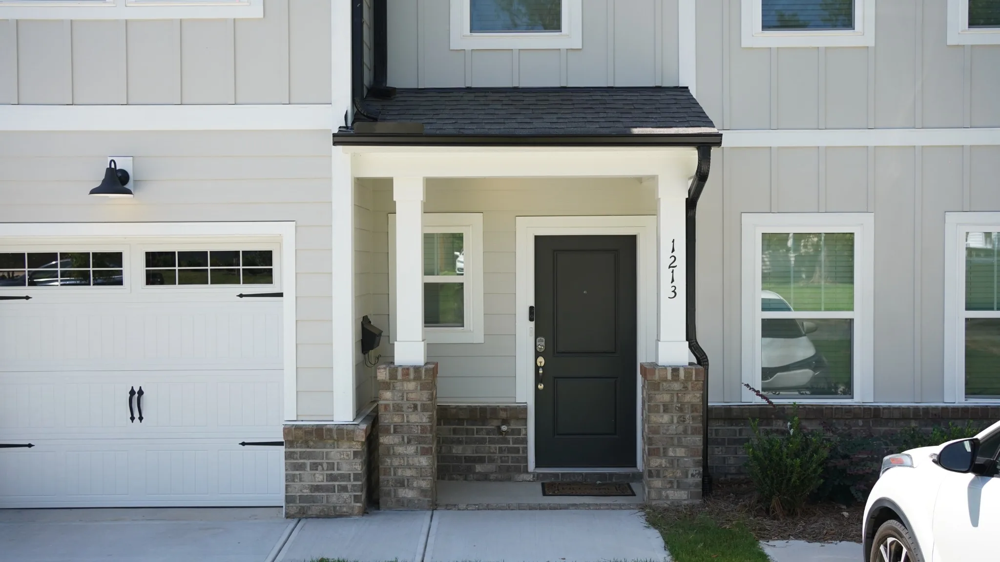
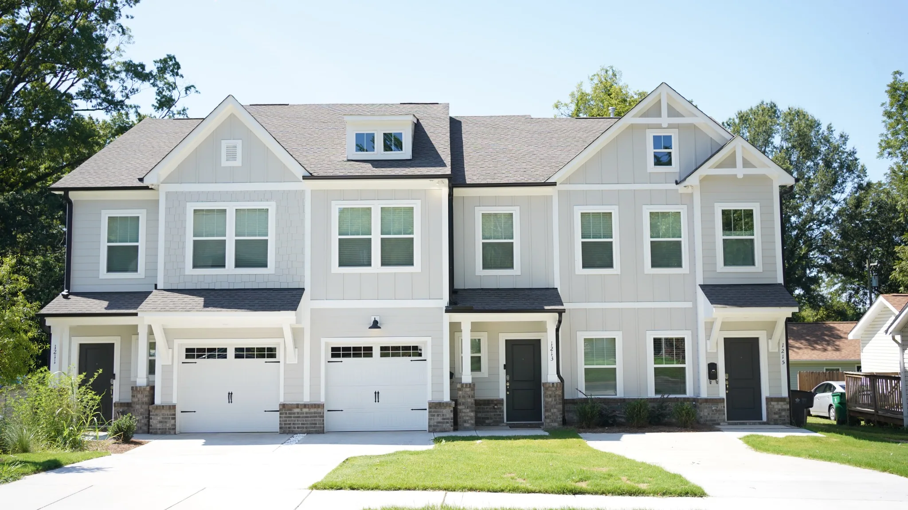

Make room in your finances.
Bedrock helps people serving in ministry lower housing costs, create financial margin, and intentionally work toward goals like reducing debt and building savings.
Explore the program ↗Bedrock creates financial margin for people serving in ministry through affordable housing and intentional support.
See how it works ↗
Find your place

Bedrock helps people serving in ministry lower housing costs, create financial margin, and intentionally work toward goals like reducing debt and building savings.
Explore the program ↗
Your support helps fund the housing gap and care for the homes that give ministry workers room to make meaningful financial progress.
Support Bedrock ↗The Bedrock model
Bedrock helps bring housing costs to a sustainable level for people serving in ministry.
Lower housing costs create additional room in a household's monthly budget.
Residents set financial goals and intentionally direct that margin toward them.
Debt can decrease, savings can grow, and families can prepare for greater stability.
What margin makes possible
Bedrock families have used the margin created through affordable housing to pay down debt, build savings, finish degrees, and prepare for homeownership.
See their stories ↗
A Bedrock story
During their time with Bedrock, Lex and Tiff paid down debt, saved toward a down payment, and prepared for homeownership. In 2023, they purchased their first home.
Read their story ↗Why Bedrock exists
Bedrock grew from a pattern Josh and Angie kept seeing: people felt called to ministry, but debt and housing costs made it difficult to afford the work they wanted to do.
Housing became a practical way to help. By reducing one of a household's largest monthly expenses, Bedrock creates room for people to work toward greater financial stability while continuing to serve.
Our story ↗Your next step